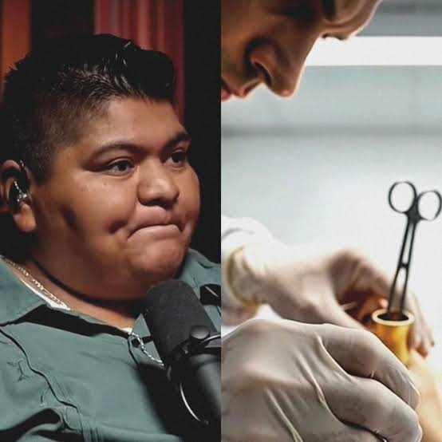

Investigador Forense
@investigador.forenseMuestra el trabajo de campo en la criminalística, procesamiento de la escena del crimen y revelado de huellas en laboratorio.
Divulgadores y profesionales de la criminología en TikTok.
@jessicarojas.criminologia

Es una criminóloga y divulgadora mexicana reconocida en redes por analizar casos reales, conducta criminal y perfilación de manera sencilla y clara.
Estudió la Licenciatura en Criminología en la Benemérita Universidad Autónoma de Puebla (BUAP) y cuenta con especialización en victimología.
Decidió estudiar esta carrera para entender el origen de las conductas antisociales y ayudar en la prevención del delito en la sociedad.
Muestra el trabajo de campo en la criminalística, procesamiento de la escena del crimen y revelado de huellas en laboratorio.
@soycriminologo
Analiza lenguaje corporal, detección de mentiras, mitos de la investigación criminal y psicología criminal.
Elige una opción de la lista o escribe tu creador preferido de TikTok.